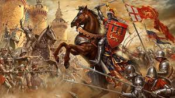

Na chamada Guerra dos Cem Anos (1337 – 1453), as tropas francesas e inglesas se colocaram em combate devido a disputas de ordem econômica e política. Esse conflito, mesmo trazendo enormes desgastes para os envolvidos, é de vital importância para a compreensão do processo de formação das monarquias francesa e britânica.
A morte do rei Carlos IV, em 1328, inaugurou um período de instabilidade política no interior da França. Eduardo III, rei da Inglaterra, ambicionava controlar o reino francês. Para isso, alegava que o fato de ser sobrinho, por parte de mãe, de Carlos IV lhe concederia autoridade para assumir a França. Em contrapartida, ressuscitando uma antiga lei da dinastia merovíngea, a Lei Sálica, os nobres franceses proibiram a ascensão de um descendente de linhagem matriarcal ao trono.
No lugar de Eduardo III, foi Filipe de Valois, primo de Carlos IV, que instalou uma nova dinastia na França. Insatisfeito com a frustração de seu golpe político, Eduardo III preparou-se para guerrear contra os franceses. No lado francês, uma antiga disputa econômica motivava essa monarquia a participar de uma guerra contra os ingleses. Nesse caso, a França pretendia dominar a região de Flandres, notadamente reconhecida por suas atividades mercantis e manufatureiras.
Os comerciantes de Flandres, ameaçados pela cobiça da monarquia francesa, resolveram apoiar os exércitos da Inglaterra que obtinham lucros expressivos com a exportação de lã para os comerciantes daquela região. O apoio financeiro de Flandres possibilitou enorme vantagem militar contra a França. Na guerra, a Inglaterra também esperava recuperar territórios da Europa Continental perdidos para a França durante o reinado de João Sem Terra.
Nesse momento, o rei deposto Carlos VII conheceu uma jovem francesa chamada Joana d’Arc, que se dizia predestinada a libertar a França do domínio britânico. Com um pequeno exército de 5000 homens, conseguiu recuperar a região de Orleans para a coroa francesa. Inspirados pela vitória da camponesa de apenas dezesseis anos, os franceses empreenderam novas conquistas ao rei Carlos VII. Os triunfos militares de Joana d’Arc se interromperam quando, vítima de uma traição, foi entregue às autoridades britânicas.
Condenada à fogueira por feitiçaria, Joana teve sua sentença cumprida na cidade de Rouen, em 1431. Joana d’Arc foi transformada em mártir dos combatentes franceses, que a partir de então conseguiram sucessivas vitórias à monarquia francesa. Na batalha de Calais, em 1453, a Guerra dos Cem Anos teve o seu fim. Como conseqüência, a guerra serviu para definirem-se os poderes monárquicos que viriam a se instituir na França e, tempos depois, na Inglaterra.